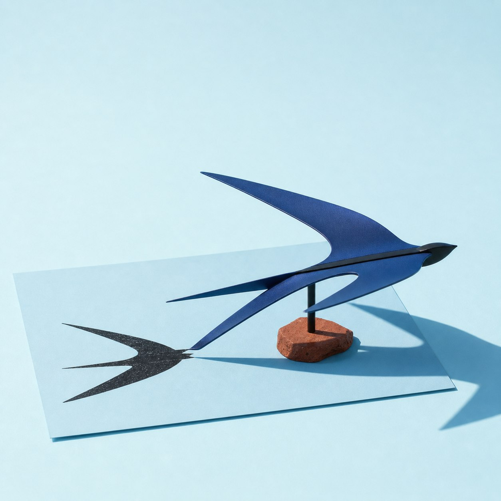
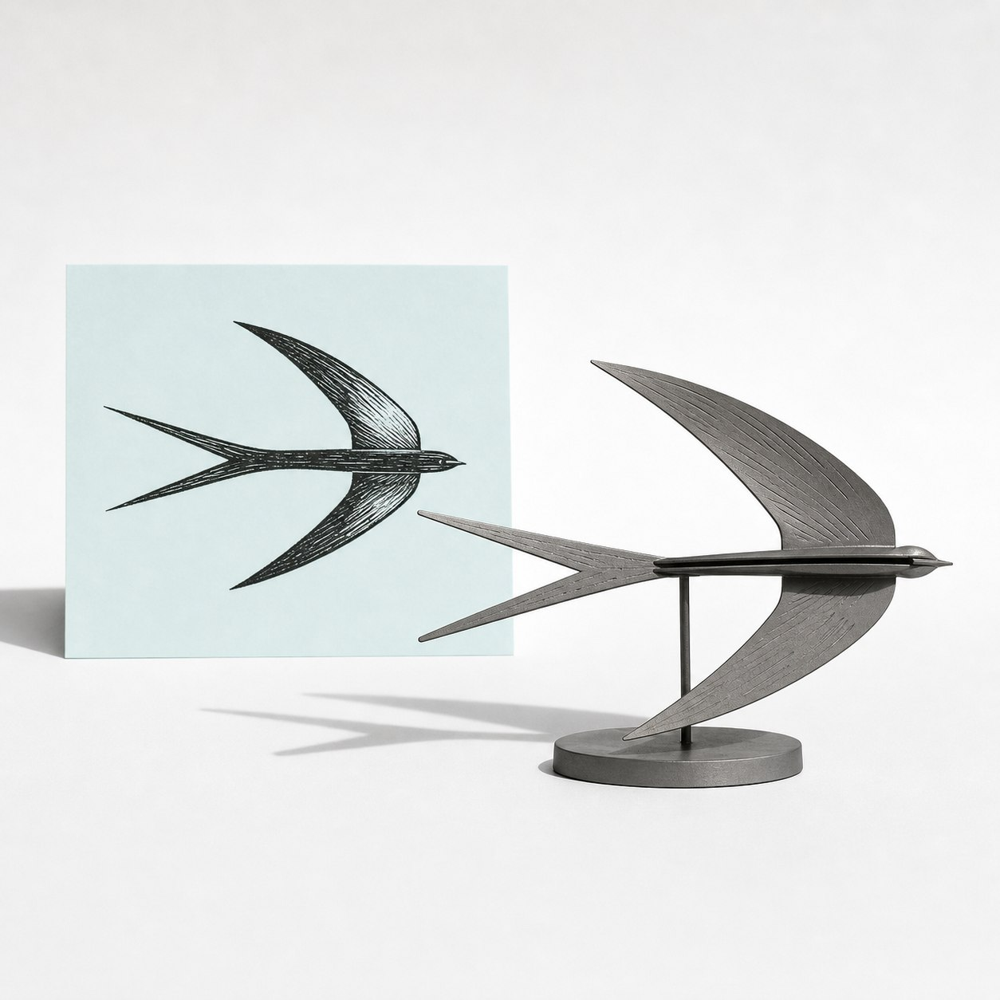
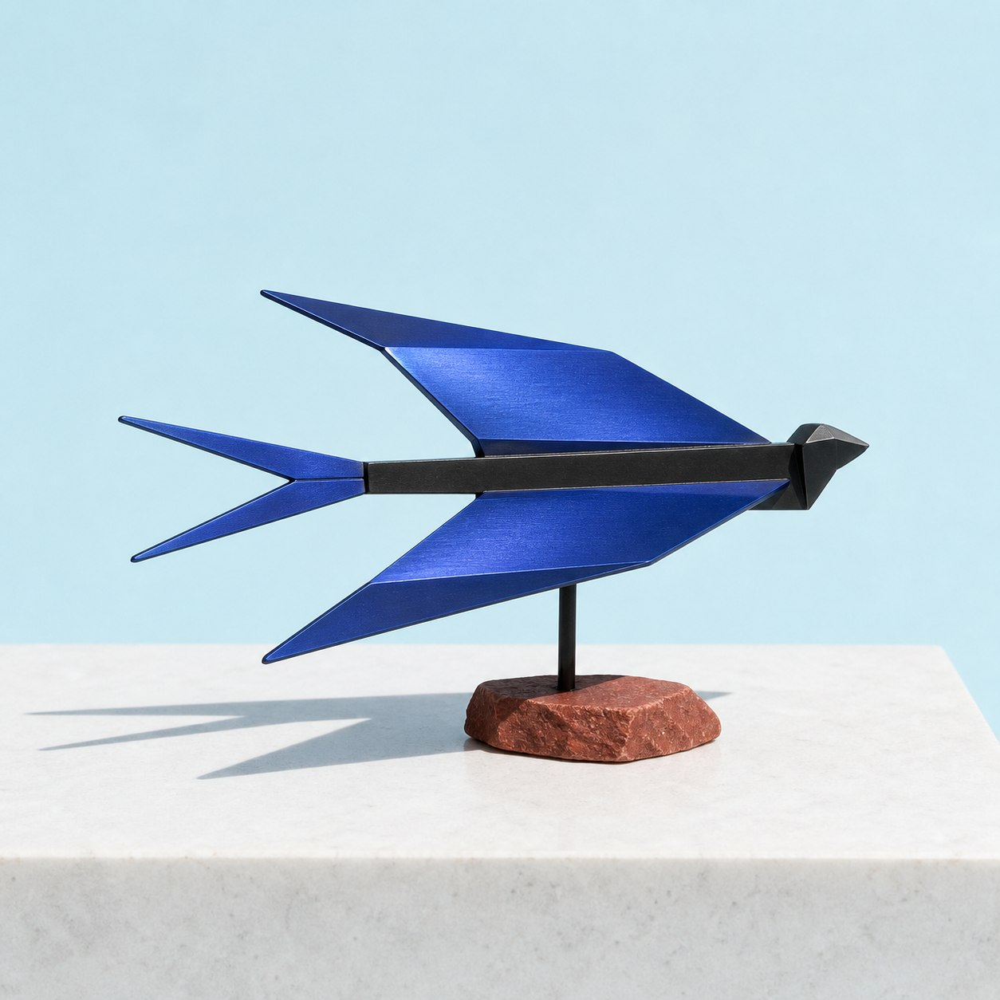
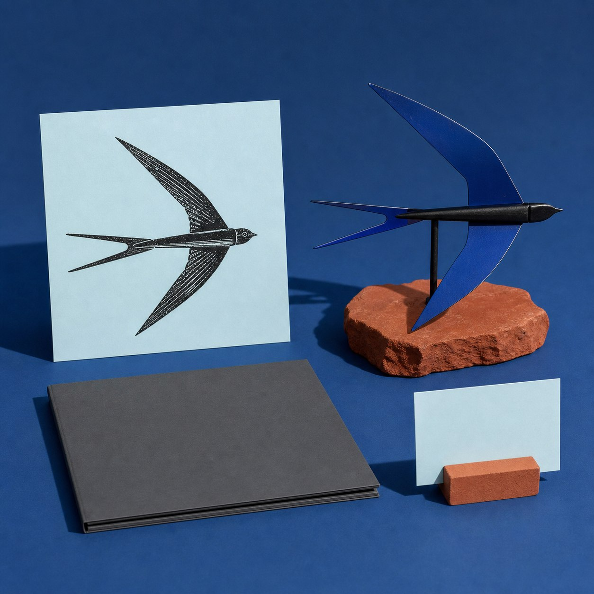

今日观察
一张已经完成的黑白燕子木刻稿里，最醒目的不只是两片长翼。METRION 把视线落在尾部那道 V 形空隙：它从躯干末端分开两片燕尾，也把整幅画的向前速度留在纸上。
从画面进入结构层
进入结构提取后，两条翼缘被整理成一前一后的折线梁，细长躯干成为连接脊，尾部 V 形必须保持真正穿透的开口。原稿里密集的刀痕只保留为表面方向，不会被逐条堆成立体纹饰。
结构验证
灰模阶段从侧面检查三件事：左右翼尖是否都完整，前后错位能否读出飞行方向，尾部开口会不会被支撑件堵住。这个中间状态让重心、底座落点和观看角度先变得清楚。
实体方向样本
图中的实体方向使用靛蓝阳极氧化铝薄板、深色金属连接脊和一枚赤陶色矿物底座。两翼保持水平展开，燕尾开口允许背景与光线真正穿过；平面木刻由此多出一个可以绕到侧面观看的空间版本。
数字档案
对版画作者和插画师来说，原作、折线灰模、实体结构与空白档案卡可以并行保存，分别记录图像、结构判断和材料方向。本文与配图均为概念方向示意，不代表真实客户项目、授权或已落地成果。
提交你的作品
如果你有一张已完成且权利清晰的鸟类线稿，发来你最想保留的一处空隙，我可以按“轮廓—穿透—支撑”整理一版结构转译观察。